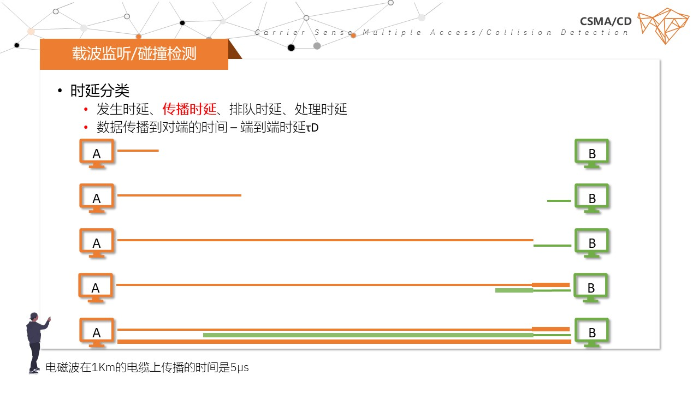

载波侦听 CSMA/CD
- 关注
- 听什么？
- 如何听？
- 如何判断冲突存在？
- 过程
- 先听再发、边听边发
主机发送数据时，为了避免冲突，必须要监听总线上的电压变化
如果没有检测到电压变化，是不是就以为着没有用户使用信道，不会发生碰撞？
- 冲突停止、延迟再发
如果达到一定阈值的时，就可以判断有站在发生数据，应向总线上发一串阻塞信号，用以通知总线上通信的对方站点（强化阻塞），同时停止发送数据，等待信道空闲时再次发送
最多经过2倍端到端时延2τD就可以确定是否有碰撞发生，即：如果发送完数据后，经过2τD 的时间还没有检测到碰撞，就可以认为数据发送成功。这个2τD也叫争用期、冲突窗口、碰撞窗口
使用于半双工通信网络

